俄羅斯情報機構鎖定 Signal 使用者：目標是透過網路釣魚竊取敏感資訊
摘要
- Signal 使用者正遭到量身打造的網路釣魚攻擊活動鎖定，相關行動主要與俄羅斯國家支持的威脅行為者有關。這些行為者主要鎖定政治人物、安全部門成員，以及從俄羅斯國家角度來看具有情報價值的官員與其他人員。
- 攻擊者並未繞過該應用程式的端對端加密（end-to-end encryption），而是利用使用者的疏忽，與一般的網路釣魚電子郵件手法相同。攻擊者最常見的做法是誘騙受害者，將攻擊者的裝置連結到其 Signal 帳號，或讓受害者透露其 PIN 或其他登入憑證，進而可能導致其通訊內容遭到入侵。在這類攻擊中，使用者的互動至關重要。
- 只要善用該應用程式的安全功能，並遵循一般資訊安全最佳實務，特別是驗證聯絡人身分、定期檢視已連結的裝置，並對下述網路釣魚手法保持警覺，即可大幅降低風險。
註：本分析所載之資訊與結論，係根據 NÚKIB 合作夥伴提供的資訊、公開領域的資訊，以及 NÚKIB 在發布時透過其業務活動取得的資訊。本文是 NÚKIB 依據現有資訊，從 NÚKIB 角度所做的資訊安全分析。
Signal 對話正成為網路間諜活動的目標，即使採用端對端加密
與俄羅斯聯邦相關的威脅行為者，日益鎖定 Signal 通訊平台的使用者，以取得敏感資訊。他們主要鎖定政治人物、執法人員，以及安全社群的一般成員，因為這些人的活動，就俄羅斯國家利益而言具有價值。[1]
攻擊者並未繞過該應用程式的端對端加密，而是利用使用者的疏忽，手法與「一般」釣魚電子郵件無異。迄今發現的各類攻擊變種，共同目標是秘密將攻擊者的裝置加入受害者的「連結裝置（connected devices）」，或取得使用者的存取碼，使攻擊者得以接收新訊息，並可能也能存取舊對話的內容。
俄羅斯情報機關可能（likely，55–70%）首次對烏克蘭軍人執行此行動，這些軍人將 Signal 應用程式作為替代通訊管道之一。[2] 之後，類似手法又被用於北約會員國中其他目標。在這些國家，安全社群在某種程度上將 Signal 視為標準的輔助平台，用於非機密、但極具彈性且安全的通訊。[3]
使用者務必保持警覺：入侵可能只是從點開連結或掃描 QR code 開始
對捷克使用者而言，首要威脅是所謂的「連結裝置釣魚（linked-device phishing）」。攻擊者掌握受害者的電話號碼，並假設受害者使用 Signal 應用程式，便會傳送惡意訊息給受害者。此訊息最常看起來像是來自 Signal 平台的正式通知，通常仿照該應用程式 IT 或安全支援團隊的視覺識別。第二種觀察到的變種，是使用惡意 QR code，其外觀可能像是加入群組的邀請。兩種變種都可能誘使使用者以虛假藉口（false pretext），輸入其應用程式 PIN 或其他登入或復原憑證。兩者的共同目標，是取得受害者的應用程式存取權，特別是將裝置連結到攻擊者所控制的裝置。
根據 NÚKIB 合作夥伴公布的現有資訊與類似分析，此類攻擊曾鎖定烏克蘭、德國、法國與荷蘭的使用者；不過，此惡意活動的地理範圍極可能（highly likely，75–85%）更廣。[4]
目前發現針對 Signal 使用者的主要釣魚變種如下：
- 偽造訊息冒充 Signal 的技術或安全支援團隊，要求使用者提供其 PIN 或其他存取憑證（圖 1）。
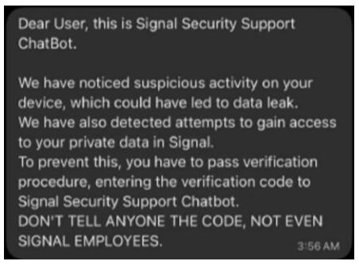
圖中文字翻譯（codex）
| 原文 | 繁中 |
|---|---|
| Dear User, this is Signal Security Support ChatBot. | 親愛的使用者，這裡是 Signal 安全支援聊天機器人。 |
| We have noticed suspicious activity on your device, which could have led to data leak. | 我們注意到您的裝置有可疑活動，可能已導致資料外洩。 |
| We have also detected attempts to gain access to your private data in Signal. | 我們也偵測到有人企圖存取您在 Signal 中的私人資料。 |
| To prevent this, you have to pass verification procedure, entering the verification code to Signal Security Support Chatbot. | 為避免資料外洩，您必須完成驗證程序，將驗證碼輸入給 Signal 安全支援聊天機器人。 |
| DON'T TELL ANYONE THE CODE, NOT EVEN SIGNAL EMPLOYEES. | 不要將驗證碼告訴任何人，連 SIGNAL 員工也不行。 |
| 3:56 AM | 上午 3:56 |
- 惡意連結或 QR code 也可能在 Signal 應用程式之外送達受害者，並將其導向偽造的外部網域。內容同樣可能涉及裝置的所謂安全性、各類群組邀請，或與不明使用者建立連線的請求（圖 2）。[5]
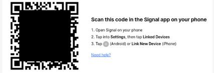
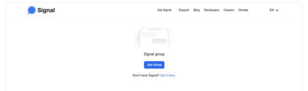
圖中文字翻譯（codex）
| 原文 | 繁中 |
|---|---|
| Scan this code in the Signal app on your phone | 使用手機上的 Signal 應用程式掃描此代碼 |
| 1. Open Signal on your phone | 1. 在手機上開啟 Signal |
| 2. Tap into Settings, then tap Linked Devices | 2. 點選「設定」（Settings），再點選「已連結裝置」（Linked Devices） |
| 3. Tap (Android) or Link New Device (iPhone) | 3. Android 請點選畫面中的圖示；iPhone 請點選「連結新裝置」（Link New Device） |
| Need help? | 需要協助嗎？ |
| Signal group / Join Group | Signal 群組／加入群組 |
| Don't have Signal? Get it here. | 還沒有 Signal？在這裡下載。 |
| Get Signal · Support · Blog · Developers · Careers · Donate · EN | 取得 Signal · 支援 · 部落格 · 開發者 · 徵才 · 捐款 · 英文 |
- 較少見的是所謂的「OAuth 網路釣魚」。這類訊息中，攻擊者會假冒成對視訊會議有興趣的人。接著，受害者會被導向攻擊者控制的身分驗證入口網站進行登入，或被要求傳送驗證碼（authentication code）。Microsoft 應用程式與服務常被鎖定為目標。[6]
建議：安全使用 Signal 應用程式[7]
下載應用程式時，請僅使用其官方網站 https://signal.org/。
充分運用應用程式的安全功能。（詳見附錄 1）
您的 Signal 帳號與電話號碼綁定。若有人取得該帳號的存取權，就可能在應用程式中冒充您。因此，請在帳號中啟用「Registration Lock」功能。此外，啟用「Screen Lock」功能可降低未經授權存取應用程式的風險。請設定通知，使鎖定畫面僅顯示新訊息的通知。若是較敏感的通訊，請使用「Disappearing Messages」功能，並透過將選項設為「Nobody」，限制電話號碼的可見性與可追溯性。
為排除先前可能的入侵，並防範未來入侵，請定期檢查已連結裝置，並仔細確認您正在與誰通訊：
在設定中的「Linked Devices」下，請確認清單上的每一台裝置都是您認得的。我們也建議僅在必要時才連結其他裝置，且僅限於您認為安全可信的裝置。若某台裝置遭入侵，攻擊者可能取得您對話內容的存取權；筆記型電腦與工作站通常更容易遭受網路威脅。
請僅與已透過安全號碼（security number）驗證的聯絡人通訊；對於未儲存在通訊錄中的號碼，若未經二次驗證，請勿接受其聯絡請求。另請檢查群組聊天中是否有重複帳號。一般而言，建議先透過其他可信的通訊管道與對方聯繫，以確認該個人檔案確實屬於對方本人。
高風險使用者：每天至少重新啟動行動裝置一次。雖然此舉無法防止裝置遭入侵，但重新啟動可限制缺乏持續性的惡意軟體或間諜軟體造成的影響。
掃描 QR code 時請特別謹慎，遇到試圖誘騙您提供 PIN 碼的情況亦然，本分析所述同一威脅的其他可能變體也應提高警覺。
若您懷疑本分析所述的任何活動，請聯繫貴單位的適當人員，通常為資安主管。
附錄 1：Signal 應用程式的安全設定
1. Registration Lock
最重要的安全措施之一，是啟用 Registration Lock 功能。此設定要求在以相同電話號碼重新註冊時必須輸入安全 PIN，即使攻擊者取得驗證碼，也能大幅降低帳號接管的可能性。
開啟 Signal 應用程式，依序點選並啟用此選項：
Settings → Account → Registration Lock
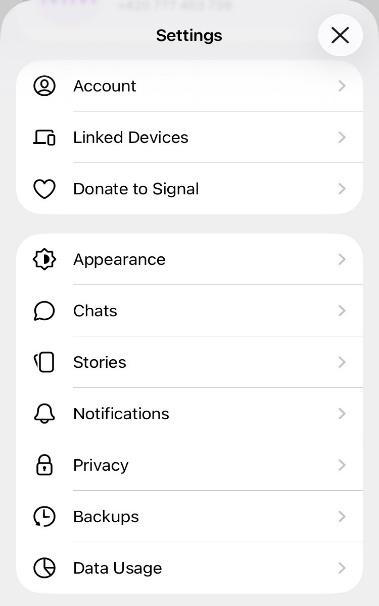
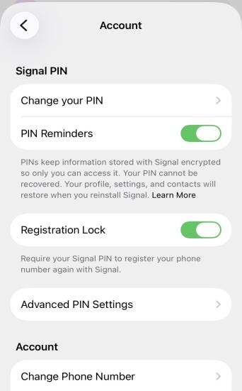
圖中文字翻譯（codex）
| 原文 | 繁中 |
|---|---|
| Settings / Account / Linked Devices / Donate to Signal / Appearance / Chats / Stories / Notifications / Privacy / Backups / Data Usage | 設定／帳號／已連結裝置／捐款給 Signal／外觀／聊天／限時動態／通知／隱私／備份／資料用量 |
| Signal PIN · Change your PIN · PIN Reminders | Signal PIN 碼 · 變更 PIN 碼 · PIN 碼提醒 |
| PINs keep information stored with Signal encrypted so only you can access it. Your PIN cannot be recovered. Your profile, settings, and contacts will restore when you reinstall Signal. Learn More. | PIN 碼可讓儲存在 Signal 中的資訊保持加密，只有你能存取。你的 PIN 碼無法復原。重新安裝 Signal 時，你的個人資料、設定和聯絡人將會還原。了解更多。 |
| Registration Lock — Require your Signal PIN to register your phone number again with Signal. | 註冊鎖定（Registration Lock）— 再次使用 Signal 註冊你的電話號碼時，須輸入 Signal PIN 碼。 |
| Advanced PIN Settings · Account · Change Phone Number | 進階 PIN 碼設定 · 帳號 · 變更電話號碼 |
2. 以電話號碼尋找帳號
同樣重要的是正確設定隱私選項，限制他人透過電話號碼找到你的帳號。建議將 “Who Can Find Me By Number” 與 “Who Can See My Number” 設為 “Nobody”。
依序點選：
Settings → Privacy → Phone Number → Who Can Find Me By Number → Nobody and Who Can See My Number → Nobody
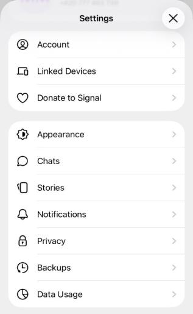
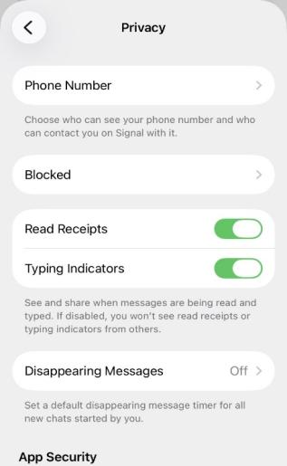
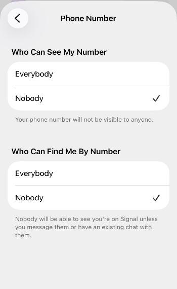
圖中文字翻譯（codex）
| 原文 | 繁中 |
|---|---|
| Privacy · Phone Number | 隱私 · 電話號碼 |
| Choose who can see your phone number and who can contact you on Signal with it. | 選擇誰可以看到你的電話號碼，以及誰可以透過電話號碼在 Signal 上與你聯絡。 |
| Blocked · Read Receipts · Typing Indicators | 已封鎖 · 已讀回條 · 輸入中提示 |
| See and share when messages are being read and typed. If disabled, you won't see read receipts or typing indicators from others. | 查看並分享訊息的已讀與輸入中狀態。關閉後，你也看不到其他人的已讀回條或輸入中提示。 |
| Disappearing Messages — Off Set a default disappearing message timer for all new chats started by you. | 訊息自動消失（Disappearing Messages）— 關閉 為你發起的所有新對話設定預設的訊息自動消失計時器。 |
| App Security | 應用程式安全性 |
| Who Can See My Number: Everybody / Nobody Your phone number will not be visible to anyone. | 誰可以看到我的電話號碼：所有人／沒有人 任何人都看不到你的電話號碼。 |
| Who Can Find Me By Number: Everybody / Nobody Nobody will be able to see you're on Signal unless you message them or have an existing chat with them. | 誰可以透過電話號碼找到我：所有人／沒有人 除非你傳訊息給對方，或已經與對方有聊天室，否則沒有人能看到你正在使用 Signal。 |
3. Disappearing Messages
另一項重要的安全措施是使用 Disappearing Messages，它會在設定的期間後自動刪除對話內容。雖然此措施無法防止帳號遭入侵，但在發生資安事件時，能限制未經授權者可存取的資訊量。
依序點選並設定期間：
Settings → Privacy → Disappearing Messages → 1 week（建議設定為一週，但基於正當理由，也可以關閉此功能。）
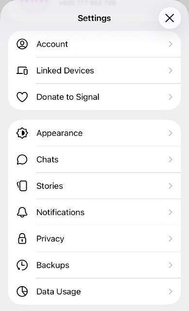
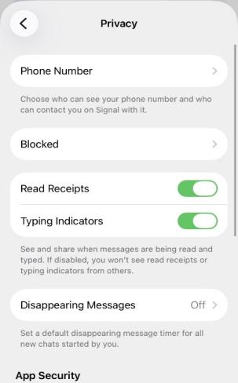
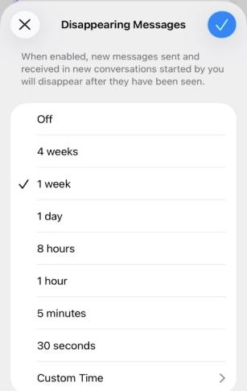
圖中文字翻譯（codex）：Disappearing Messages 選項畫面
| 原文 | 繁中 |
|---|---|
| When enabled, new messages sent and received in new conversations started by you will disappear after they have been seen. | 啟用後，由你發起的新對話中所傳送及接收的新訊息，會在被查看後自動消失。 |
| Off / 4 weeks / 1 week / 1 day / 8 hours / 1 hour / 5 minutes / 30 seconds / Custom Time | 關閉／4 週／1 週／1 天／8 小時／1 小時／5 分鐘／30 秒／自訂時間 |
4. QR code
對於 QR code、連結與群組邀請，應特別謹慎。只有在使用者有意識地將自己的裝置連結至 Signal 應用程式時，才應掃描 QR code。不請自來的群組邀請、不明聯絡人傳來的連結，或要求連結裝置的請求，都可能是企圖取得你帳號未授權存取權的手段。
5. 絕不洩露 PIN
任何情況下都絕不可以將你的 Signal PIN、驗證碼或其他安全資訊分享給任何人。攻擊者常假冒技術支援人員或管理員，以協助解決技術問題為藉口，試圖從使用者取得這些資訊。請記住，Signal 官方支援團隊不會透過應用程式內訊息聯繫使用者，也絕不會索取你的 PIN 或驗證資訊。任何自稱為 Signal 支援的帳號都應立即檢舉並封鎖。
6. 檢查已連結裝置
同樣重要的是定期檢查已連結的裝置。應用程式設定可顯示所有連結至此帳號的裝置清單。任何不明或未使用的裝置都應立即移除。未經授權裝置的連結，可能是帳號遭入侵最早的徵兆之一。使用者應定期進行此項檢查，特別是在發現應用程式出現異常行為時。
依序點選：
Settings → Linked Devices
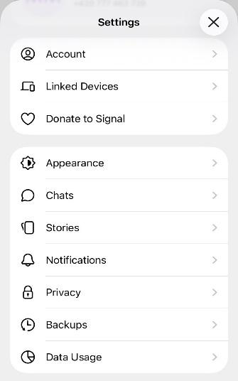
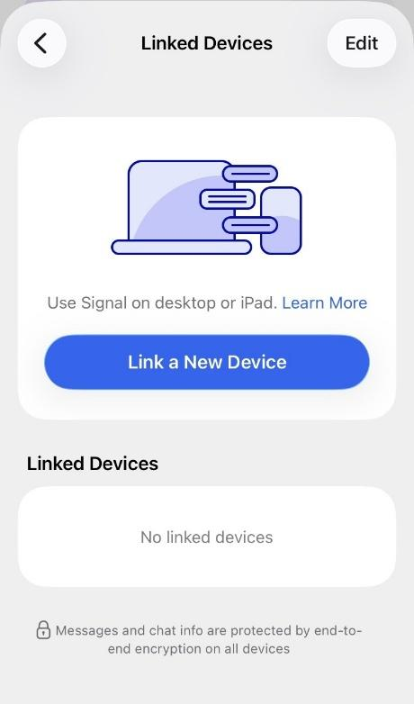
圖中文字翻譯（codex）：Linked Devices 畫面
| 原文 | 繁中 |
|---|---|
| Linked Devices · Edit | 已連結的裝置 · 編輯 |
| Use Signal on desktop or iPad. · Learn More | 在電腦或 iPad 上使用 Signal。· 進一步了解 |
| Link a New Device | 連結新裝置 |
| No linked devices | 沒有已連結的裝置 |
| Messages and chat info are protected by end-to-end encryption on all devices | 所有裝置上的訊息和聊天資訊都受到端對端加密保護 |
參考來源
- Google Threat Intelligence Group. 2025. Signals of Trouble: Multiple Russia-Aligned Threat Actors Actively Targeting Signal Messenger. 取得網址：https://cloud.google.com/blog/topics/threat-intelligence/russia-targeting-signal-messenger/ ↩
- 同上 ↩
- POLITICO. 2025. Inside the Hazy, Fractured Mess of Signal Use in the Government. 取得網址：https://www.politico.com/news/2025/04/02/inside-the-hazy-fractured-mess-of-signal-chats-in-the-government-00264466
The Record Media. 2026. Kremlin Hackers Attempting to Compromise Signal, WhatsApp Accounts Globally. 取得網址：https://therecord.media/russian-hackers-target-signal-whatsapp-warn-dutch-intelligence-agencies ↩ - Bundesamt für Sicherheit in der Informationstechnik (BSI). 2026. Handlungsleitfaden bei Phishing über den Signal Support. 取得網址：https://www.bsi.bund.de/…/signal-support_node.html
National Cyber Security Centre (NCSC). 2025. NCSC Warns of Messaging App Targeting. 取得網址：https://www.ncsc.gov.uk/news/ncsc-warns-of-messaging-app-targeting
Agence nationale de la sécurité des systèmes d'information (ANSSI) – Centre de Coordination des Crises Cyber (C4). 2026. Note d’alerte: Ciblage des messageries instantanées. 取得網址：https://www.cert.ssi.gouv.fr/uploads/20260320_NP_C4_Alerte_Ciblage_messagerie_instantanee.pdf ↩ - Google Threat Intelligence Group. 2025. Signals of Trouble: Multiple Russia-Aligned Threat Actors Actively Targeting Signal Messenger. 取得網址：https://cloud.google.com/blog/topics/threat-intelligence/russia-targeting-signal-messenger/ ↩
- Volexity. 2025. Dangerous Invitations: Russian Threat Actor Spoofs European Security Events in Targeted Phishing Attacks. 取得網址：https://www.volexity.com/blog/2025/12/04/dangerous-invitations-russian-threat-actor-spoofs-european-security-events-in-targeted-phishing-attacks/ ↩
- 更新自 NÚKIB 原〈Doporučení pro používání aplikace Signal〉建議。Národní úřad pro kybernetickou a informační bezpečnost (NÚKIB). 2022. Doporučení pro používání aplikace Signal. 取得網址：https://nukib.gov.cz/cs/infoservis/doporuceni/1816-doporuceni-pro-pouzivani-aplikace-signal/ ↩
使用條款（TERMS OF USE OF INFORMATION）
資訊之使用依循 Traffic Light Protocol（TLP，交通號誌協定）方法。資訊以標記（flag）標示其使用條款，標記說明資訊的性質與使用條件如下：
| 顏色 | 標記 | 使用條款 |
|---|---|---|
| 紅 Red | TLP:RED | 資訊不得提供給原指定收件人以外的任何人，除非另已明確指定其他可接收的對象。若收件人認為有必要向其他單位揭露，僅能在資訊來源方（originator）同意下進行。 |
| 橘 Orange | TLP:AMBER+STRICT | 資訊僅可在收件人所屬組織內部分享，且僅限於符合知悉需求（need-to-know）、且其知情對解決該資訊所述問題或威脅至關重要的人員。 |
| 橘 Orange | TLP:AMBER | 資訊可在收件人所屬組織及其合作夥伴內分享，且僅限於符合知悉需求、且其知情對解決該資訊所述問題或威脅至關重要的人員。 |
| 綠 Green | TLP:GREEN | 資訊可在受益方（beneficiary）所屬組織內，並在適當時與受益方的其他合作夥伴分享，但不得透過公開可取得的管道；轉發時，受益方須確保通訊的機密性。 |
| 白 White | TLP:CLEAR | 資訊可被進一步提供與散布，不受限制。原作者及／或受益方或第三方基於智慧財產權而設的限制，不受本條款影響。 |
NÚKIB 機率用語（EXPRESSIONS OF PROBABILITY）
| 用語 | 機率 |
|---|---|
| Almost certainly（幾乎確定） | 90–100 % |
| Highly likely（極可能） | 75–85 % |
| Likely（可能） | 55–70 % |
| Cannot be ruled out / Realistic possibility（不能排除／有現實可能） | 40–50 % |
| Unlikely（不太可能） | 20–35 % |
| Highly unlikely（極不可能） | 0–15 % |